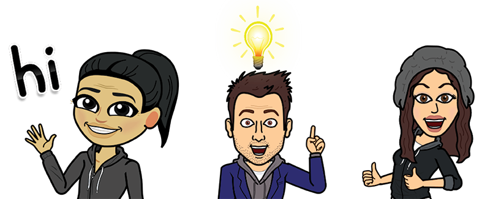
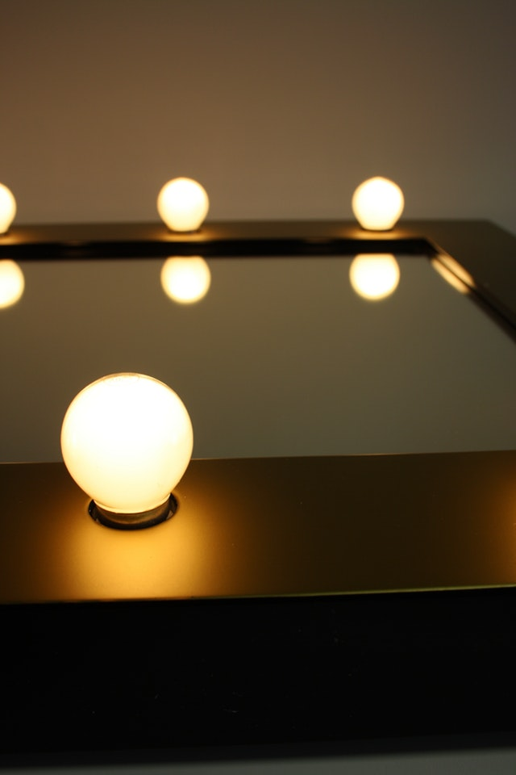

The Daily Reflection Team

The Daily Reflection is a smart mirror made by Maire Chew, James Mendenhall, and Chelcie Britt
for their week long Q3 project while completing Galvanize's Web Development Immersive program.
The mirror displays the news, weather, time, and your daily reminders set from a convenient
web application.
We used Raspberry Pi written in Python to power the mirror. For the front end we kept minimal using
standard HTML, Bulma CSS, JavaScript, and Facebook Authentication. The back end connects the
Raspberry Pi to the web app, and uses Python, DynamoDB, and AWS.
The two way mirror was the most essential part of the build. To create this component,
we used an acrylic see-through mirror that is 1mm thick. To build the box and frame we used reclaimed wood.
We then set the acrylic in the frame and a 24in LCD monitor connected to the Raspberry behind the mirror
to display the data.
